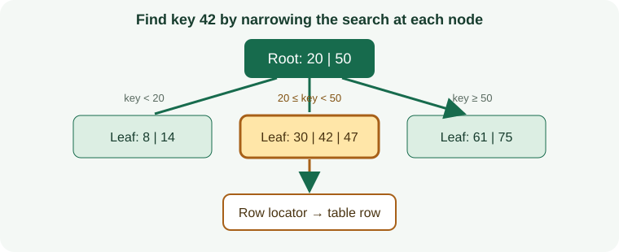

What Is a Collation-Aware Indexes in MongoDB?
Stores string keys according to a locale-aware collation defining language-specific comparison and case/accent behavior.
How the Collation-Aware Indexes Algorithm Works
Stores string keys according to a locale-aware collation defining language-specific comparison and case/accent behavior.

When to Use Collation-Aware Indexes
Locale-sensitive sorting and comparisons such as case-insensitive lookups.
How to Create a MongoDB Collation-Aware Indexes
Review data quality, existing structures, feature support, build time, and deployment requirements before creating an index on a production table.
db.users.createIndex({ displayName: 1 }, { collation: { locale: "en", strength: 2 } })Collation-Aware Indexes Query Example
This example demonstrates the matching query shape. Check the execution plan to confirm that the engine can use the index.
db.users.find({ displayName: "alex" }).collation({ locale: "en", strength: 2 })Queries Supported by Collation-Aware Indexes
Locale-sensitive sorting and comparisons such as case-insensitive lookups. A similar-looking predicate may not use the same access path; operators, expressions, key order, and data type all matter.
Read Performance, Storage, and Write Costs
Different collations may require different indexes; collation changes equality and ordering. Indexes reduce some search work but require storage and add maintenance to writes.
Collation-Aware Indexes Limitations and Common Mistakes
Queries generally need a compatible collation to use the index for string comparison or sort.
Do not assume that an index being present means the optimizer chose it or that the query became selective.
How to Measure and Tune Collation-Aware Indexes
Set collation deliberately and test language edge cases; verify the actual plan.
Compare representative plans and timings before and after, including concurrent writes and realistic data volumes.
Collation-Aware Indexes Questions
Will the database always use this index?
No. The optimizer weighs selectivity, estimated costs, statistics, cache state, and the amount of data returned.
What should I verify before production?
Confirm version support, query compatibility, write overhead, build/rollback procedures, and index behavior during backup and recovery.
Official MongoDB Index Documentation
Check MongoDB documentation: Index Types for release-specific requirements and supported operators.